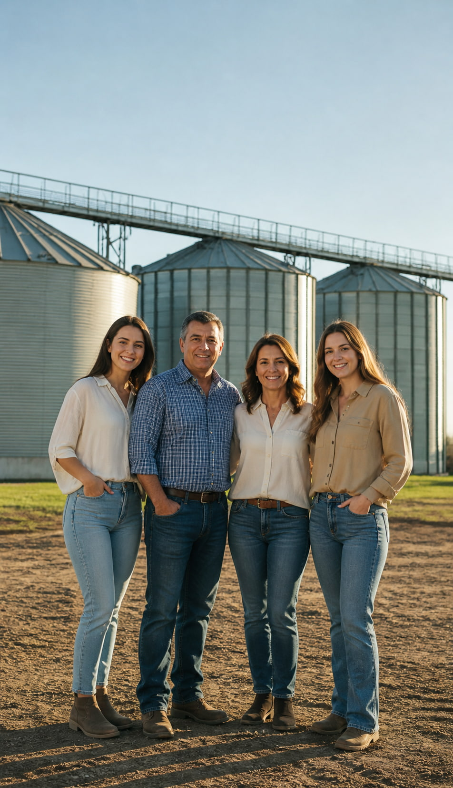

Transparencia
Operamos con total claridad en cada transacción, garantizando la seguridad de su cosecha.


NUESTRA ESENCIA
Con más de 25 años de trayectoria en el sector agropecuario, nos consolidamos como un puente sólido entre el productor y el mercado.
Nuestra identidad se forja en el trato personalizado, el respaldo técnico constante y una respuesta rápida ante los desafíos dinámicos del campo argentino.
Operamos con total claridad en cada transacción, garantizando la seguridad de su cosecha.
Estamos presentes en cada etapa, desde la siembra hasta la comercialización final.
Nuestra ubicación estratégica nos permite estar siempre a pocos minutos de su campo.